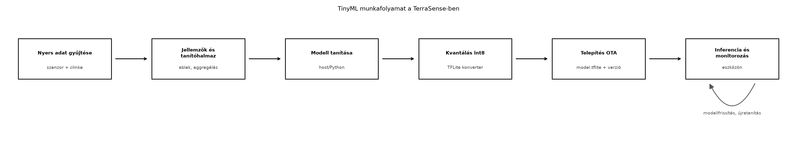

Az üvegházban a Helyi feldolgozás: szűrés, aggregálás, eseménydetektálás alfejezetben megismert determinisztikus szabályok sok esetben elégségesek: ha a talajnedvesség hirtelen csökken, az egyszerű küszöb is jól működik. Vannak azonban olyan hibamódok, amelyek több szenzor együttes, nem nyilvánvaló mintázatában jelennek meg: például egy eltömődött csepegtetőnél a talajnedvesség és a hőmérséklet együtt mutat anomáliát, de egyenként még a normál tartományban maradhat. Ilyenkor a gépi tanulás kiegészítheti a szabályalapú logikát. A kihívás az, hogy az eszköz egy Mikrovezérlő vs. Linuxos processzor: memória, OS nélküli világ alfejezetben tárgyalt erőforrás-korlátos környezet: néhány tíz KiB RAM, néhány száz KiB flash, és nincs virtuális memória. A TinyML pontosan erre a környezetre optimalizálja a modelleket.
Definíció. A TinyML olyan gépi tanulási modellek tervezése, betanítása és futtatása, amelyek erőforrás-korlátos beágyazott eszközökön – jellemzően MCU-n vagy kis teljesítményű edge-gatewayen – futnak, gyakran néhány tíz–száz KiB modellmérettel és néhány milliszekundumos vagy az alatti inferenciaidővel.
Definíció. Az inferencia a betanított modell futtatása új bemeneti adaton; a kvantálás pedig a modell lebegőpontos súlyainak és aktivációinak alacsonyabb bitszélességű, gyakran 8 bites egész számmá alakítása úgy, hogy a pontosság lehetőleg alig csökkenjen.
A TinyML-munkafolyamat két részre válik: a tanítás és a modellátalakítás tipikusan hoston vagy felhőben fut, a telepített modell pedig az eszközön. Az alábbi folyamatábra a TerraSense szempontjából mutatja a lépéseket.

A folyamat a címkézett vagy múltból ismert nyers adatok gyűjtésével indul. Ebből a Helyi feldolgozás: szűrés, aggregálás, eseménydetektálás alfejezetben megismert ablakos jellemzőket számítjuk, például átlagot, szórást, minimumot, maximumot és trendet. A tanítás hoston, Python-környezetben történik; majd a modellt int8-as TensorFlow Lite formátumba konvertáljuk. A kvantált modellt verziózott artefaktumként telepítjük az eszközre OTA-n keresztül. Az eszközön az inferencia fut, és a kimenetet a szabályalapú logika vagy riasztási küszöb használja fel.
A TinyML nem helyettesíti automatikusan a szabályokat. A döntésnél a késleltetés, az adatvédelem, a sávszélesség és az energiaigény mellett a fejlesztési költséget is figyelembe kell venni.
| Szempont | Szabályalapú / egyszerű küszöb | TinyML az eszközön |
|---|---|---|
| Fejlesztési idő | rövid, azonnal ellenőrizhető | adatgyűjtés, tanítás, kiértékelés kell |
| Determinisztikusság | teljes | közelítő, statisztikai |
| Erőforrásigény | minimális | modell + arena + CPU |
| Sok jellemző, nem lineáris kapcsolat | nehezen karbantartható | jól kezeli |
| Frissítés | kódváltozás, firmware-OTA | modell-OTA lehetséges |
| Kritikus biztonsági döntés | előnyös | csak kiegészítő lehet |
A lokális inferencia legfontosabb előnyei:
Ugyanakkor a modell becslési hibája nem okozhat közvetlen veszélyes állapotot; a végrehajtó logika maradjon determinisztikus.
Egy kis, teljesen kapcsolt neurális háló paraméterszáma könnyen számítható. Ha a bemeneti jellemzők száma , a rejtett rétegben neuron van, a kimeneti osztályok száma pedig , akkor a paraméterszám:
A műveletigényt a szorzás-összegzés (MAC) műveletek száma közelíti:
A kvantálásnál egy lebegőpontos értékből egész értéket képzünk skála és nullapont segítségével:
A skála az értéktartomány és a 8 bites tartomány hányadosa, a nullapont pedig azt mondja meg, hogy a nulla lebegőpontos érték melyik egész számra képződik le. Az int8-as modell a 32 bites lebegőpontos modellnél körülbelül négyszer kisebb tárhelyet igényel, és az MCU fixpontos vagy DSP-utasításokkal gyorsabban dolgozza fel.
A Cortex-M osztályú MCU-kon egy egyszerű teljesen kapcsolt háló
inferenciaideje jellemzően mikroszekundumos–milliszekundumos
nagyságrendű. A pontos érték az órajeltől, a DSP-kiterjesztéstől és az
interpreter overheadjétől függ; a native_sim időzítése nem
hardverhű.
A Google által korábban TensorFlow Lite for Microcontrollers néven ismert keretrendszer – amelyet az újabb dokumentáció LiteRT for Microcontrollers néven említ – kifejezetten MCU-kra tervezett interpretált futtatókörnyezet. A modell FlatBuffers formátumú, amelyet C-tömbként vagy fájlból beolvasva lehet beágyazni. Az interpreter fix méretű, statikusan allokált memóriaarénát használ; ez illeszkedik a Mikrovezérlő vs. Linuxos processzor: memória, OS nélküli világ alfejezetben tárgyalt statikus allokációs elvhez.
Az alábbi API-vázlat a TFLite Micro/LiteRT hívási szerződését
mutatja: ellenőrzi az AllocateTensors és az
Invoke eredményét, a tenzor típusát, alakját, méretét és
kvantálási paramétereit, a bemeneti puffer hosszát, majd tényleges
argmaxot számol. A vázlat nem lefordított példa, mert a
TFLite Micro könyvtár és a model.h nincs a labor
környezetében; a pontos függvény- és mezőneveket a telepített kiadásban
ellenőrizni kell. A vázlat célja annak rögzítése, hogy egy termelési
wrappernek mely hibákat kell kontrolláltan kezelnie, nem egy működő
osztályozó helyettesítése.
#include <cstddef>
#include <cstdint>
#include "model.h" // g_model: a konvertált, int8 modell
#include "tensorflow/lite/micro/micro_interpreter.h"
#include "tensorflow/lite/micro/micro_mutable_op_resolver.h"
namespace {
constexpr std::size_t kFeatureCount = 6;
constexpr std::size_t kClassCount = 3;
constexpr std::size_t kArenaSize = 8 * 1024;
alignas(16) std::uint8_t arena[kArenaSize];
tflite::MicroInterpreter* interpreter = nullptr;
TfLiteTensor* input = nullptr;
TfLiteTensor* output = nullptr;
bool check_tensor(const TfLiteTensor* tensor, std::size_t expected,
const char* name, const char** error) {
if (tensor == nullptr) {
*error = "hiányzó tensor";
return false;
}
if (tensor->type != kTfLiteInt8) {
*error = "a tensor nem int8";
return false;
}
if (tensor->dims->size != 2 || tensor->dims->data[1] != expected) {
*error = "váratlan tensor-alak";
return false;
}
if (tensor->bytes != expected) {
*error = "váratlan tensor-méret";
return false;
}
if (tensor->params.scale <= 0.0F) {
*error = "nem pozitív kvantálási skála";
return false;
}
if (tensor->params.zero_point < -128 ||
tensor->params.zero_point > 127) {
*error = "a nullapont kívül esik az int8 tartományon";
return false;
}
(void)name;
return true;
}
} // namespace
bool ml_init(const char** error) {
if (error == nullptr) {
return false;
}
static tflite::MicroMutableOpResolver<2> resolver;
if (resolver.AddFullyConnected() != kTfLiteOk ||
resolver.AddSoftmax() != kTfLiteOk) {
*error = "az operátor nem regisztrálható";
return false;
}
static tflite::MicroInterpreter static_interpreter(
tflite::GetModel(g_model), resolver, arena, kArenaSize);
interpreter = &static_interpreter;
if (interpreter->AllocateTensors() != kTfLiteOk) {
*error = "AllocateTensors sikertelen";
return false;
}
input = interpreter->input(0);
output = interpreter->output(0);
if (!check_tensor(input, kFeatureCount, "input", error) ||
!check_tensor(output, kClassCount, "output", error)) {
return false;
}
return true;
}
bool ml_classify(const std::int8_t* features, std::size_t count,
int* class_id, const char** error) {
if (error == nullptr) {
return false;
}
if (features == nullptr || class_id == nullptr) {
*error = "nullptr bemenet vagy kimenet";
return false;
}
if (count != kFeatureCount) {
*error = "rövid feature-puffer";
return false;
}
if (interpreter == nullptr || input == nullptr || output == nullptr) {
*error = "az interpreter nincs inicializálva";
return false;
}
for (std::size_t i = 0; i < count; ++i) {
input->data.int8[i] = features[i];
}
if (interpreter->Invoke() != kTfLiteOk) {
*error = "Invoke sikertelen";
return false;
}
int best = 0;
for (std::size_t i = 1; i < kClassCount; ++i) {
if (output->data.int8[i] > output->data.int8[best]) {
best = static_cast<int>(i);
}
}
*class_id = best;
return true;
}A check_tensor a hiányzó tenzort, a nem int8 típust, a
váratlan alakot és méretet, a nem pozitív skálát és az int8 tartományon
kívüli nullapontot egyaránt hibává teszi. Az ml_classify a
nullptr, a rövid feature-puffer és az inicializálatlan
interpreter esetét is elutasítja, majd az Invoke hibáját
továbbadja. Az argmax az int8 kimeneti tenzor értékein fut; a kimeneti
valószínűséghez a scale és a zero_point
ismeretében lehet visszakvantálni.
A TFLite Micro telepítése nélkül is ellenőrizhető ugyanez a szerződés
egy minimális, önálló C++17 runnerrel. A tinyml_runner.cpp
nem TFLite-modellt futtat, hanem egy Model interfészen
keresztül ugyanazokat az ellenőrzéseket gyakorolja: tensor típus és
hossz, skála, nullapont, bemeneti hossz, invoke eredménye
és argmax. A jó modell két különböző bemenetre két különböző osztályt
ad; a szándékosan hibás modellek és a rövid puffer kontrollált hibát
eredményeznek.
#include <cstddef>
#include <cstdint>
#include <iomanip>
#include <iostream>
#include <string>
#include <vector>
namespace terrasense {
enum class TensorType { kInt8, kFloat32 };
struct Tensor {
TensorType type{TensorType::kInt8};
std::size_t length{0};
float scale{0.0F};
int zero_point{0};
std::vector<std::int8_t> data;
};
struct Model {
Tensor input;
Tensor output;
bool (*invoke)(Model&, std::string&) = nullptr;
};
bool invoke_ok(Model& model, std::string&) {
if (model.input.data.size() != 6 || model.output.data.size() != 3) {
return false;
}
const bool negative = model.input.data[0] < 0;
model.output.data[0] = static_cast<std::int8_t>(negative ? 100 : -100);
model.output.data[1] = 0;
model.output.data[2] = static_cast<std::int8_t>(negative ? -100 : 100);
return true;
}
bool invoke_fail(Model&, std::string& error) {
error = "szándékos operátorhiba";
return false;
}
bool valid_tensor(const Tensor& tensor, std::size_t expected,
const char* name, std::string& error) {
if (tensor.type != TensorType::kInt8) {
error = std::string(name) + ": nem int8 tensor";
return false;
}
if (tensor.length != expected) {
error = std::string(name) + ": elvárt " + std::to_string(expected) +
" elem, kapott " + std::to_string(tensor.length);
return false;
}
if (tensor.scale <= 0.0F) {
error = std::string(name) + ": a skála nem pozitív";
return false;
}
if (tensor.zero_point < -128 || tensor.zero_point > 127) {
error = std::string(name) + ": a nullapont kívül esik az int8 tartományon";
return false;
}
return true;
}
bool classify(Model& model, const std::vector<std::int8_t>& features,
int& label, float& score, std::string& error) {
if (!valid_tensor(model.input, 6, "input", error)) {
return false;
}
if (!valid_tensor(model.output, 3, "output", error)) {
return false;
}
if (features.size() != model.input.length) {
error = "input hossz: elvárt " + std::to_string(model.input.length) +
", kapott " + std::to_string(features.size());
return false;
}
if (model.invoke == nullptr) {
error = "hiányzó invoke operátor";
return false;
}
model.input.data = features;
if (!model.invoke(model, error)) {
return false;
}
int best = 0;
for (int i = 1; i < 3; ++i) {
if (model.output.data[i] > model.output.data[best]) {
best = i;
}
}
label = best;
score = model.output.scale *
static_cast<float>(model.output.data[best] - model.output.zero_point);
return true;
}
Model make_model() {
Model model;
model.input.length = 6;
model.input.scale = 0.1F;
model.input.data.assign(6, 0);
model.output.length = 3;
model.output.scale = 0.05F;
model.output.data.assign(3, 0);
model.invoke = &invoke_ok;
return model;
}
void run_case(const char* name, Model& model,
const std::vector<std::int8_t>& features) {
int label = -1;
float score = 0.0F;
std::string error;
const bool ok = classify(model, features, label, score, error);
std::cout << name << ": ";
if (ok) {
std::cout << "ok label=" << label << " score=" << std::fixed
<< std::setprecision(1) << score;
} else {
std::cout << "hiba: " << error;
}
std::cout << "\n";
}
} // namespace terrasense
int main() {
using namespace terrasense;
const std::vector<std::int8_t> normal{-10, 0, 0, 0, 0, 0};
const std::vector<std::int8_t> valve{10, 0, 0, 0, 0, 0};
Model good = make_model();
run_case("jó modell, normal", good, normal);
run_case("jó modell, valve", good, valve);
Model short_input = make_model();
run_case("rövid feature-puffer", short_input,
std::vector<std::int8_t>(5, 0));
Model bad_type = make_model();
bad_type.input.type = TensorType::kFloat32;
run_case("rossz tensor típus", bad_type, normal);
Model bad_output = make_model();
bad_output.output.length = 2;
run_case("rossz kimeneti hossz", bad_output, normal);
Model bad_operator = make_model();
bad_operator.invoke = &invoke_fail;
run_case("hibás operátor", bad_operator, normal);
return 0;
}Build és futtatás:
g++ -std=c++17 -Wall -Wextra -Wpedantic -Werror -O2 \
-o tinyml_runner tinyml_runner.cpp
./tinyml_runnerTényleges kimenet (GCC 13.3.0, C++17):
jó modell, normal: ok label=0 score=5.0
jó modell, valve: ok label=2 score=5.0
rövid feature-puffer: hiba: input hossz: elvárt 6, kapott 5
rossz tensor típus: hiba: input: nem int8 tensor
rossz kimeneti hossz: hiba: output: elvárt 3 elem, kapott 2
hibás operátor: hiba: szándékos operátorhibaA kimenet első két sora igazolja, hogy a két bemenet két külön
osztályt kap (label=0 és label=2). A további
sorok a rövid feature-puffert, a rossz tensor típust, a rossz kimeneti
hosszt és a szándékosan hibás operátort külön, olvasható hibaüzenettel
utasítják el. Ez a runner a TFLite API viselkedésének szerződéses
modellje, nem helyettesíti a valódi TFLite Micro buildet és a hardveres
mérést.
A TerraSense-ben érdemes két szinten gondolkodni:
ts-node szintjén: egy 6 bemenetes osztályozó,
amely a Helyi feldolgozás: szűrés, aggregálás,
eseménydetektálás alfejezetben kiszámított ablakjellemzőkből három
kimeneti osztályt becsül: normal,
sensor_fault, valve_fault. A kimeneti
valószínűség alapján a determinisztikus állapotgép dönthet arról, hogy
azonnal riaszt, vagy csak megnövelt mintavételi gyakorisággal folytatja
a megfigyelést.
ts-gw szintjén: a gateway több csomópont adatát összevonva detektálhat üvegház-szintű anomáliát, például térben inkonzisztens hőmérsékleti mintázatot. Itt C++-ban ugyanaz a TFLite-runtime futtatható Linux-processzon, nagyobb arénával és nagyobb modellel.
A modell kimenete nem helyettesíti az állapotgépet: a szelepzárás és a hibajelzés szabályai maradjanak ellenőrizhető, determinisztikus feltételekhez kötve. A TinyML a gyanú detektálására szolgál, nem a biztonsági döntés közvetlen meghozatalára.
A modell nem kód, hanem adat: egy model.tflite fájl,
amely verzióval, mérettel és kriptográfiai hashel rendelkezik. Ugyanaz
az aláírási és visszagörgetési mechanizmus alkalmazható rá, mint a
firmware-re, ezért a OTA-frissítés: A/B képek,
rollback, delta, fokozatos kiadás alfejezetben tárgyalt
artefaktumkezeléshez csatlakozik. A modellverziót a bemeneti jellemzők
vektorának verziójával együtt kell kezelni: ha a jellemzőkészlet
változik, a régi modellt nem szabad az új firmware-en futtatni, és
fordítva.
Továbbvitt eredmény. A TerraSense-modellt a laborban
~/iot-labor/i040/model/model.tflite néven, a metaadatokat
pedig model.json néven tároljuk. A model.json
tartalmazza a version, a feature_version, a
hash_sha256, a model_size_bytes és az
input_scale/input_zero_point mezőket. A
hash_sha256 és a model_size_bytes értékét nem
kézzel írjuk be: a csomagoló lépés a tényleges model.tflite
fájlból számítja ki, és a null értéket az OTA-kapu
elutasítja. Ezt a konvenciót és a fájlnevet használja majd a OTA-frissítés: A/B képek, rollback, delta, fokozatos
kiadás alfejezet.
Tegyük fel, hogy a ts-node modellje a következő: 6 bemeneti jellemző, 16 neuron egy rejtett rétegben, és 3 kimeneti osztály. A paraméterszám:
A szükséges MAC-műveletek száma:
Az int8-as súlyok és torzítások együttes mérete 163 B, míg float32
esetén ugyanez közelítőleg 652 B. A FlatBuffers-modellhez hozzáadódik a
gráf és a tenzorleírók overheadje, így a teljes int8-as modell
gyakorlatban 1–2 KiB nagyságrendű lehet, a float32 pedig 3–4 KiB. Az
SRAM-aréna a rejtett réteg 16 int8-as aktivációja, a 6 bemeneti és 3
kimeneti tenzor, valamint az interpreter belső állapota miatt 4 KiB-tal
kényelmesen kiszolgálható. Ezek a paraméterszámból és a kvantálási
bitszélességből számított értékek; a tényleges .tflite
fájlméretet és a modell hibaarányát a konverzió és a kiértékelés után
kell megmérni. A következő szakasz ehhez ad egy szintetikus
referenciaadatot és egy futtatható baseline-t, amely nem TFLite-modell,
hanem a jellemző- és kvantálási lánc reprodukálhatóságát ellenőrzi.
Időbecslés illusztratív célból: egy 64 MHz-es Cortex-M4 mag 144 MAC
műveletet elvileg néhány mikroszekundum alatt elvégez, de a
memória-elérés, az aktiváció és az interpreter overheadje miatt a
gyakorlatban inkább 50–500 µs nagyságrendű futásidő várható. Ez nem mért
adat, és a native_sim futtatás nem helyettesíti a valós
hardveres mérést. A lényeg az, hogy a modell az óránkénti vagy
eseményvezérelt mintavétel mellett energia szempontból elhanyagolható a
rádióadáshoz képest, ha miatta egy MQTT-csomag elhagyható.
A fejezet eddigi modellméretei analitikus becslések, nem egy betanított háló mért értékei. A H161-ben hiányolt reprodukálhatóság érdekében ez a szakasz egy kis, szintetikus referenciaadatot és egy csak a Python standard könyvtárát használó baseline-t ad. Ez nem TFLite-modell, és nem állítja, hogy valódi üvegházas tanítóadat vagy éles pontosság áll rendelkezésre; a cél a jellemzővektor, a kvantálás, a centroidok és az argmax szerződésének ellenőrzése. A 18 minta osztályonként 6 sort tartalmaz; osztályonként az első 4 tanító, az utolsó 2 független teszt. A szintetikus adat szándékosan elkülöníthető, ezért a baseline eredménye nem általánosítási mérés.
Fájl: data/reference.csv
temp_mean,temp_min,temp_max,humidity_mean,soil_mean,soil_delta,label
22.1,21.2,23.1,56.0,42.0,0.2,normal
22.4,21.5,23.3,57.5,41.5,-0.1,normal
22.0,21.0,23.0,55.0,43.0,0.4,normal
22.8,21.8,23.8,58.0,40.5,-0.2,normal
22.2,21.1,23.2,56.5,44.0,0.3,normal
22.6,21.6,23.6,57.0,41.0,0.0,normal
22.5,21.4,23.5,8.0,42.0,0.1,sensor_fault
22.3,21.3,23.3,6.5,41.5,0.0,sensor_fault
22.7,21.6,23.7,9.0,43.0,-0.1,sensor_fault
22.2,21.2,23.2,7.5,40.5,0.2,sensor_fault
22.4,21.5,23.4,5.5,42.5,0.0,sensor_fault
22.6,21.7,23.6,8.5,41.0,0.1,sensor_fault
25.4,24.4,27.0,47.0,25.0,-8.0,valve_fault
25.8,24.8,27.4,46.0,23.0,-7.5,valve_fault
25.2,24.2,26.8,48.0,27.0,-8.5,valve_fault
25.6,24.6,27.2,45.0,22.0,-7.0,valve_fault
25.0,24.0,26.6,49.0,28.0,-9.0,valve_fault
25.9,24.9,27.5,46.5,24.0,-8.2,valve_faultFájl: scripts/baseline_eval.py
#!/usr/bin/env python3
"""Kis, csak standard könyvtárat használó int8 nearest-centroid baseline."""
import csv
import math
import sys
from collections import Counter, defaultdict
FEATURES = ["temp_mean", "temp_min", "temp_max",
"humidity_mean", "soil_mean", "soil_delta"]
LABELS = ["normal", "sensor_fault", "valve_fault"]
SCALE = 0.1
ZERO_POINT = 0
def load_rows(path):
rows = []
with open(path, newline="", encoding="utf-8") as handle:
for row in csv.DictReader(handle):
rows.append({
"features": [float(row[name]) for name in FEATURES],
"label": row["label"],
})
return rows
def mean(values):
return sum(values) / len(values)
def pstdev(values):
m = mean(values)
return math.sqrt(sum((value - m) ** 2 for value in values) / len(values))
def quantize(value, feature_mean, feature_std):
z = (value - feature_mean) / feature_std
q = round(z / SCALE) + ZERO_POINT
return max(-128, min(127, q))
def main(path):
rows = load_rows(path)
by_label = defaultdict(list)
for row in rows:
by_label[row["label"]].append(row)
train = []
test = []
for label in LABELS:
class_rows = by_label[label]
if len(class_rows) < 6:
raise SystemExit(f"kevés minta a {label} osztályban")
train.extend(class_rows[:4])
test.extend(class_rows[4:])
feature_means = [mean([row["features"][i] for row in train])
for i in range(len(FEATURES))]
feature_stds = [pstdev([row["features"][i] for row in train])
for i in range(len(FEATURES))]
if any(std == 0 for std in feature_stds):
raise SystemExit("nulla szórású jellemző a tanítóhalmazban")
def qrow(row):
return [quantize(value, feature_means[i], feature_stds[i])
for i, value in enumerate(row["features"])]
centroids = {}
for label in LABELS:
class_q = [qrow(row) for row in train if row["label"] == label]
centroids[label] = [round(mean([vec[i] for vec in class_q]))
for i in range(len(FEATURES))]
predictions = []
confusion = Counter()
for row in test:
q = qrow(row)
distances = {}
for label in LABELS:
distances[label] = sum(abs(q[i] - centroids[label][i])
for i in range(len(FEATURES)))
predicted = min(LABELS, key=lambda label: (distances[label], label))
predictions.append((row["label"], predicted))
confusion[(row["label"], predicted)] += 1
correct = sum(1 for expected, predicted in predictions if expected == predicted)
accuracy = correct / len(predictions)
print(f"tanító minták: {len(train)}, teszt minták: {len(test)}")
print(f"jellemző-skála: {SCALE}, zero_point: {ZERO_POINT}")
print("int8 centroidok:")
for label in LABELS:
print(f" {label}: {centroids[label]}")
print(f"centroid tárhely: {len(LABELS) * len(FEATURES)} B")
print(f"teszt pontosság: {correct}/{len(predictions)} = {accuracy:.3f}")
print("konfúziós mátrix (sor=várt, oszlop=becsült):")
print(" " + " ".join(f"{label:>12}" for label in LABELS))
for expected in LABELS:
counts = [confusion[(expected, predicted)] for predicted in LABELS]
print(f" {expected:>12} " + " ".join(f"{count:>12}" for count in counts))
if accuracy < 0.5:
return 1
return 0
if __name__ == "__main__":
if len(sys.argv) != 2:
raise SystemExit("használat: baseline_eval.py data/reference.csv")
sys.exit(main(sys.argv[1]))Futtatás:
python3 scripts/baseline_eval.py data/reference.csvTényleges kimenet (Python 3, szintetikus referenciaadat):
tanító minták: 12, teszt minták: 6
jellemző-skála: 0.1, zero_point: 0
int8 centroidok:
normal: [-7, -7, -7, 10, 7, 7]
sensor_fault: [-6, -7, -6, -14, 7, 7]
valve_fault: [14, 14, 14, 4, -14, -14]
centroid tárhely: 18 B
teszt pontosság: 6/6 = 1.000
konfúziós mátrix (sor=várt, oszlop=becsült):
normal sensor_fault valve_fault
normal 2 0 0
sensor_fault 0 2 0
valve_fault 0 0 2A baseline a tanítóhalmazból jellemzőnként átlagot és szórást számol,
a jellemzőket z-score után 0,1-es skálával int8-ra kvantálja, majd
osztályonként int8 centroidot képez. A becslés a centroidoktól vett
L1-távolság minimuma, tehát a kimenet argmaxa; a
centroid tárhely: 18 B a három osztály hat jellemzőjének
int8 mérete. A 6/6 tesztpontosság azt igazolja, hogy a három szintetikus
osztály ezen a kis mintán megkülönböztethető, nem azt, hogy egy valódi
TFLite modell vagy egy éles üvegház adatán is jó lenne. A valódi
.tflite méretét, hibaarányát és MCU-s inferenciaidejét a
modell konvertálása és hardveres mérése után kell rögzíteni; ezek ebben
a fejezetben nem mért értékek.
A modell méretét a konvertálás után ls -l model.tflite,
a beágyazott C-tömb méretét pedig a bináris size kimenete
mutatja. A pontos tenzorméreteket a TFLite interpreter debug-kimenete
vagy a modellvizsgáló eszköz írja ki. A gyakori hibákat az alábbi
táblázat foglalja össze.
| Tünet | Lehetséges ok | Javítás |
|---|---|---|
AllocateTensors() hibát ad |
túl kicsi arena vagy hibás modell | növeld a kArenaSize értéket, vagy ellenőrizd a modell
tenzorméreteit; a hibát ne nyeld el |
| A modell mindig ugyanazt az osztályt adja | kiegyensúlyozatlan tanítóhalmaz, rossz küszöb vagy hiányzó argmax | tanítóadatok átsúlyozása, küszöb kalibrálása; a kimeneti tenzor argmaxát számold ki |
| Hoston jó, eszközön rossz | kvantálási hiba, nem egyező bemeneti normalizálás | reprezentatív kalibráció, ugyanaz a skála a jellemzőknél |
| Rövid feature-puffer csendben átmásolódik | nincs bemeneti hosszellenőrzés | a count == kFeatureCount feltétel legyen kötelező;
rövid pufferre kontrollált hiba |
| Túl nagy a bináris méret | nem használt műveletek is belinkelődtek | MicroMutableOpResolver csak a szükséges op-kkal |
| Frissített modell rossz eredményt ad | jellemzőverzió-eltérés | feature_version ellenőrzése OTA előtt |
| A manifest hash-e helyőrző | kézzel írt szöveg vagy null került a csomagba |
a csomagoló számítsa ki a SHA-256-ot; az OTA-kapu a
null vagy nem 64 hexadecimális karakteres hash-t utasítsa
el |
Invoke eredményét
pedig kötelező vizsgálni.labor-only-placeholder-hash vagy a null nem
SHA-256; ha az OTA ezt elfogadja, a letöltött modell integritása nem
ellenőrizhető. A hash-t a csomagoló lépés számítsa ki a tényleges
fájlból, és a kapu a hiányzó vagy hibás hash-t utasítsa el.model.json leírót a Kidolgozott példa 6 bemenetes modelljéhez. A fájl
tartalmazzon version, feature_version,
hash_sha256, model_size_bytes,
model_file és kvantálási paramétereket. A hash és a méret
még ne legyen kitalált érték: a forrássablonban null
szerepeljen, és a csomagoló lépés töltse ki a tényleges
model.tflite fájlból. Ezt a fájlformátumot előkészíti a OTA-frissítés: A/B képek, rollback, delta, fokozatos
kiadás alfejezet.normal
osztályt ad. Nevezz meg négy lehetséges okot, és mindegyikhez egy-egy
diagnosztikai lépést.model.json:{
"schema_version": 1,
"name": "ts-node-anomaly-v1",
"version": "1.0.0",
"feature_version": 1,
"format": "tflite-int8",
"model_file": "model.tflite",
"model_size_bytes": null,
"hash_sha256": null,
"hash_status": "pending_packaging",
"input_scale": 0.235,
"input_zero_point": -43,
"output_labels": ["normal", "sensor_fault", "valve_fault"]
}A null itt nem helyettesítő hash, hanem annak jelölése,
hogy a forrássablon még nem tartalmaz csomagolt modellt. A csomagoló
lépés a model.tflite fájlból számítja ki a
sha256sum kimenetét és a stat -c%s méretet,
majd csak akkor írja be a manifestbe, ha a hash 64 hexadecimális
karakter és a méret pozitív. Az OTA-kapu a null, a
hash_status != "packaged" vagy a nem megfelelő hash esetét
elutasítja, így helyőrző soha nem kerülhet a frissítési folyamatba. Az
input_scale és input_zero_point szintén a
konvertált modellből származó érték; a fenti számok szemléltetők, nem
egy létező modell mérési eredményei.
A TinyML lehetővé teszi, hogy a TerraSense ts-node és ts-gw rétege
lokálisan, kis késleltetéssel, adatvédelem és nagyobb rádióforgalom
nélkül detektáljon anomáliákat. A modell méretét a paraméterszám és az
int8 kvantálás határozza meg; egy 6 bemenetes, 16 rejtett neuronos
osztályozó mindössze 144 MAC műveletet és néhány KiB-ot igényel. A
munkafolyamat a címkézett adatgyűjtéstől a tanításon és kvantáláson át a
verziózott OTA-telepítésig tart. A fejezet TFLite API-vázlata nem
lefordított példa, hanem a wrapper szerződését mutatja; a külön
futtatott tinyml_runner a típus-, méret-, kvantálási- és
argmax-ellenőrzéseket gyakorolja, a szintetikus referenciaadaton futó
baseline pedig a jellemző- és kvantálási láncot teszi reprodukálhatóvá.
A modellek valódi mérete, hibaaránya és MCU-s inferenciaideje továbbra
is mérési feladat; a modell kimenete csak gyanút ad, a biztonsági
végrehajtás determinisztikus marad. Továbbvitt
eredmény: a ~/iot-labor/i040/model/model.tflite és
model.json elnevezés, valamint a
feature_version, hash_sha256,
model_size_bytes és hash_status
metaadat-konvenció, amelyet a OTA-frissítés: A/B
képek, rollback, delta, fokozatos kiadás alfejezet használ fel.
tflite-micro integrációs dokumentációEllenőrzési igény: a LiteRT/TFLite Micro aktuális termék- és
API-nevei, a MicroInterpreter,
MicroMutableOpResolver és a data.int8 mező
pontos aláírása a használt könyvtári verzióban ellenőrizendő. A TFLite
API-vázlat nem része a lefordított laborpéldának; a
tinyml_runner.cpp önállóan, GCC 13.3.0-val fordult és
futott, a baseline_eval.py pedig Python 3 alatt futott. A
szintetikus referenciaadat és a 6/6 baseline-pontosság nem valós
üvegházi mérés és nem általánosítási teljesítmény; a valódi TFLite
modell, a .tflite méret, a hibaarány és a hardveres
inferenciaidő továbbra is mérési feladat. A példában szereplő
modellméretek és futásidők számított vagy illusztratív jellegűek; valós
hardveres mérést nem helyettesítenek.